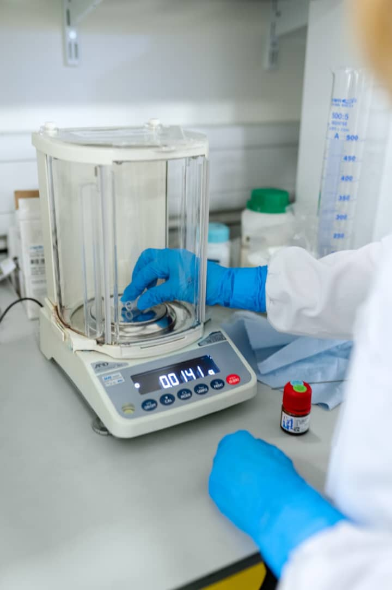

In this project, An interactive dashboard was created where three RL agents were trained and deployed on Streamlit to optimize the ROP and reduce the Bit Wear Rate given five influencing drilling parameters (WOB, RPM, Mud Weight, FlowRate and Torque)
In this project, an EOR dataset was generated from a stochastic model and was preprocessed (resampled using SMOTE) before being trained on and evaluated by three supervised learning models (LightGBM, Random Forest Regressor and Polynomial SVM) to predict the Recovery Factor of an electrokinetic assisted enhanced oil recovery process.
In this project, a daily drilling report was obtained, analyzed, explored, cleaned, resampled before being trained on by an anomaly detection algorithm (Isolation Forest), a Mixture Density Network and on a developed Convolutional Neural Network Algorithm. All these models were trained to predict and classify zones where mud losses were most likely to occur.
In this project, a comprehensive dataset was generated through simulations of a simplified one-dimensional pipeline model following pre-established engineering standards. The dataset was prreprocessed using Latin Hypercube Resampling. Two ML algorithms (ANN and LightGBM) were trained and validated using this dataset to predict the hydrate formation likelihood and corrosion rate.
A high-fidelity synthetic dataset simulating 1,000 patient profiles with demographic, clinical, and temporal features was generated, incorporating a significant class imbalance (95% Alive, 5% Deceased). A systematic methodology involving data preprocessing (including iterative imputation, feature engineering, and SMOTE oversampling), implementation of three machine learning models (LightGBM, Random Forest, and Artificial Neural Network), and evaluation using clinically relevant metrics (Recall, Precision, Specificity, AUPRC, AUC ROC) was employed. Model interpretability was explored using feature importance and partial dependence plots. Furthermore, a simulation using the best-performing model estimated the potential impact of a gene therapy intervention targeting Fetal Hemoglobin (HbF).

This project explores the use of natural additives—Terminalia Mantaly (TM) and Cocoyam (CY)—as sustainable alternatives to the synthetic Poly-anionic Cellulose (PAC-R) for improving Cuttings Transport Efficiency (CTE) in drilling operations. Using machine learning and optimization techniques, this study offers a data-driven framework to evaluate and enhance mud system performance while reducing environmental impact.
This project provides an in-depth analysis of inventory data for Warehouse One, located in Igbo Efun, Lekki. The main objective is to assess inventory health, monitor spatial stock distribution, and recommend actions to minimize spoilage and optimize usage. The dataset includes floor-by-floor breakdowns of item quantities, statuses (Good, Spoiling, Expired), and storage sections.